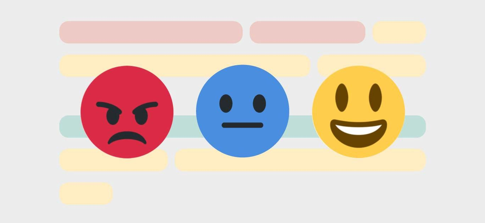

This particular project can determine whether a statement is positive or
negative.

It uses the nltk library i.e. natural language toolkit. Stopwords are
words which are generally filtered out before processing a natural
language. We obtain these from the nltk library. We run a loop to read
through a bunch of restaurant reviews and store only the words that
don't occur in the stopwords to a corpus(text document). Later on we
vectorize these words with respect to the labels and convert it to an
array. A classifier is trained on this with a split of 80/20. If a
sentence is positive the output is 1 and its is 0 otherwise.